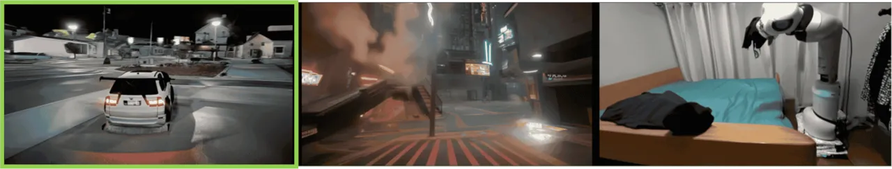
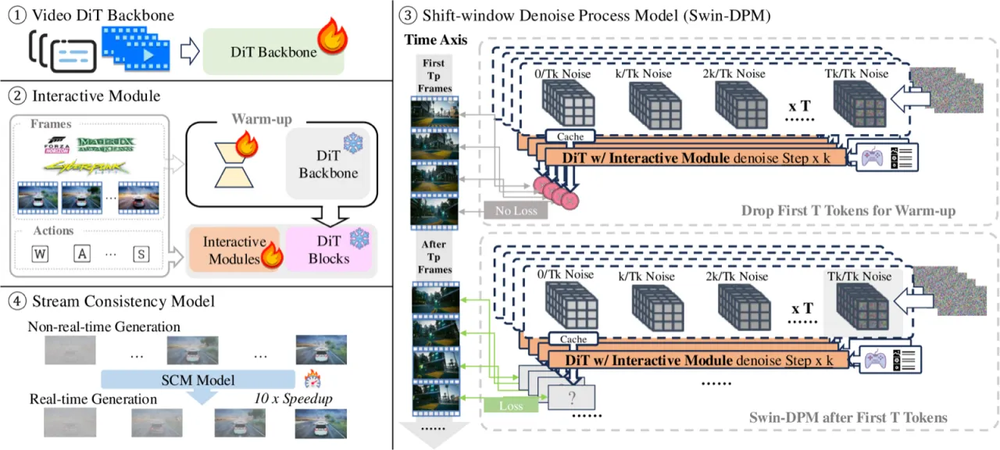
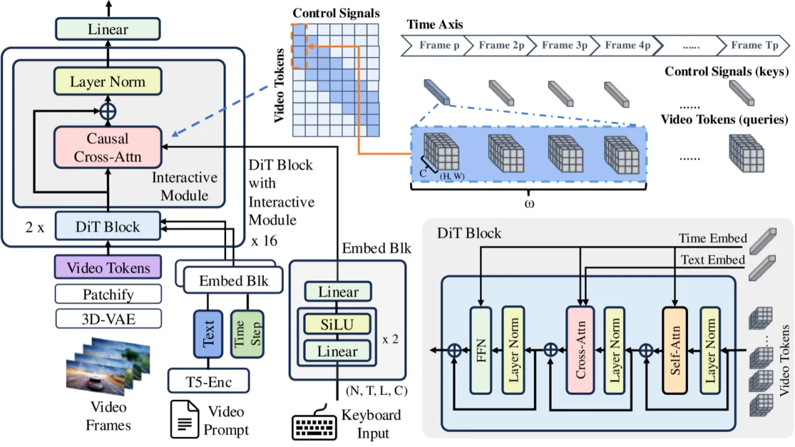
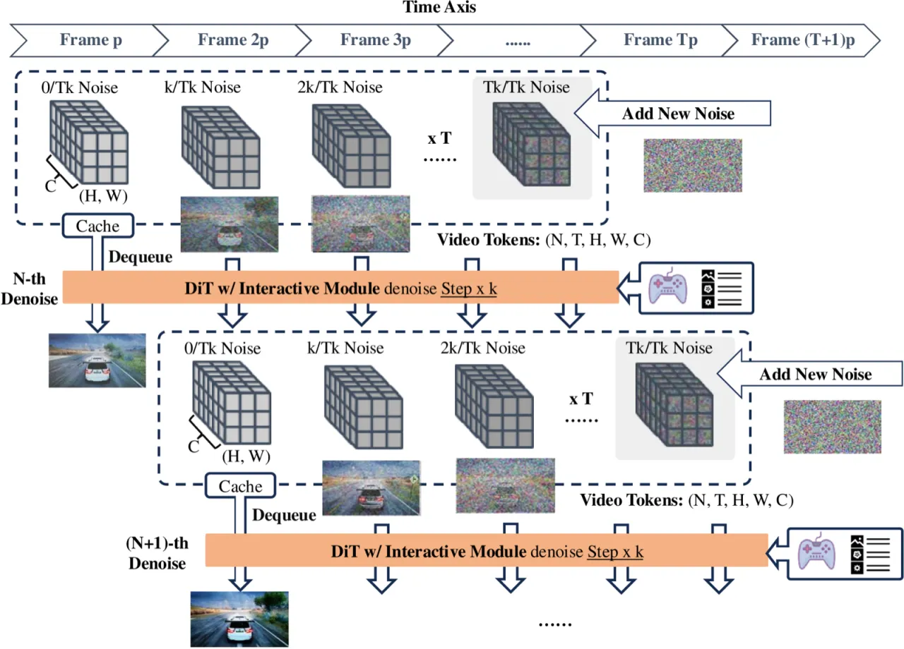
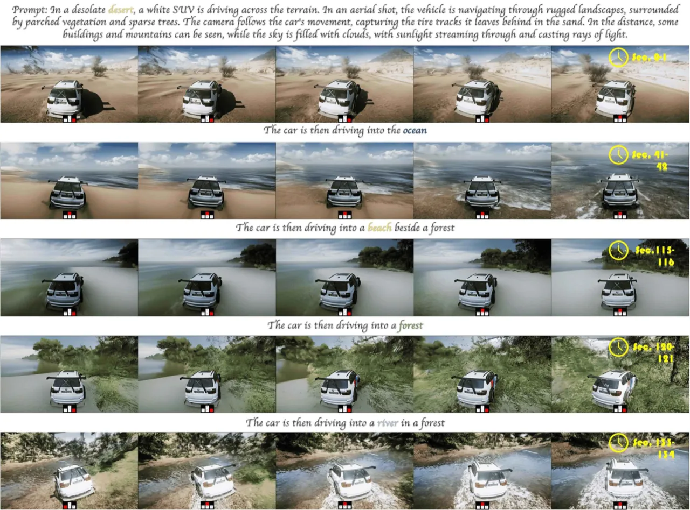
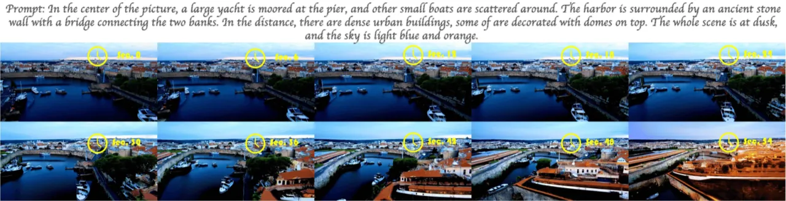

The Matrix 是一个基础世界模拟器，能够以实时、响应式控制生成连续的 720p 高保真真实场景视频流，同时支持第一人称与第三人称视角。系统仅使用有限的 AAA 游戏数据（Forza Horizon 5、Cyberpunk 2077）与大规模真实世界视频进行训练，即可在多种地形中以 8–16 FPS 的速度连续生成，并对未见场景具备 zero-shot 泛化能力。
现有世界模型面临三个核心瓶颈：（1）仅聚焦于低保真非 AAA 游戏；（2）生成长度受限（通常不超过约一分钟）；（3）无法实现实时渲染。这些问题使世界模型难以作为真正可交互的游戏引擎或仿真平台。
"The first scalable, high-fidelity 1280×720 pixel world model in real time" — combining AAA game realism, infinite-length generation, and frame-level control in a single system.


The Matrix 由三个核心模块构成：Interactive Module（将键盘输入转化为语言描述后注入扩散过程）、Shift-Window Denoising Process Model（Swin-DPM）（滑动窗口无限长生成）以及 Stream Consistency Model（SCM）（蒸馏加速实现实时推理）。骨干网络为 Video DiT，共 32 个注意力块，基础参数量 2.3B，加上 Interactive Module 后总计 2.7B。


自主构建的游戏数据采集系统，利用 Cheat Engine、Reshade 插件和 OBS 录制，从 CPU 内存状态中同步捕获游戏视频帧与控制信号：
Forza 数据过滤：平衡控制信号、碰撞检测、卡顿角色去除、运动-控制不匹配检测、伪影去除，共五项策略。
SCM 将 Swin-DPM 蒸馏为 4 步一致性模型，推理速度提升 10–20×，最终实现 8–16 FPS 的实时渲染。
代价是视觉质量有所下降（FVD 从 1211.30 上升到 1936.79），但控制精度（Move-LPIPS）从 0.125 进一步提升至 0.109，体现了速度-质量之间的权衡关系。
实验在三个场景下评估：Forza Horizon 5（赛车驾驶）、Cyberpunk 2077（角色步行）以及 DROID 机器人操控。评估指标包含视觉质量（FID、FVD、CLIP Score，在 2048 秒随机生成视频上计算）与控制精度（Move-PSNR、Move-LPIPS，在 2048 秒固定测试集上计算）。
| 场景 | Move-LPIPS ↓ | Move-PSNR ↑ |
|---|---|---|
| Cyberpunk 2077 | 0.129 | 28.24 |
| Forza Horizon 5 | 0.125 | 28.98 |
| DROID 机器人 | 0.180 | 27.90 |
| 组件 | 推理速度 | FVD ↓ | Move-LPIPS ↓ |
|---|---|---|---|
| + Interactive Module（基线） | 55 sec / 48 frames | 1211.30 | 0.125 |
| + Swin-DPM | 0.8 FPS | 1651.50 | 0.113 |
| + SCM（完整系统） | 8–16 FPS | 1936.79 | 0.109 |
注：Swin-DPM 的引入使 FVD 上升（视觉质量有所牺牲），但保持了强控制精度；SCM 进一步提升推理速度约 10–20×，并进一步降低 Move-LPIPS 至 0.109。


引入 Swin-DPM 后 FVD 从 1211.30 上升至 1651.50，进一步加入 SCM 后升至 1936.79。实现实时推理（8–16 FPS）是以视觉保真度为代价的，现阶段难以同时达到最高画质与最快速度。
对未见场景（如室内办公室）和未见对象（如人类角色）的泛化结果仅以定性图示呈现，未提供系统性的量化评估，泛化边界尚不明确。
训练数据主要来自 Forza Horizon 5 与 Cyberpunk 2077 两款 AAA 游戏，以及 DROID 机器人数据集；评估域相对集中，系统在其他类型游戏或真实世界场景中的表现尚未系统验证。
Interactive Module 将键盘输入翻译为自然语言描述（如 "The car is driving forward"），控制信号经过一层语言抽象，精细的运动轨迹或连续动作空间的控制能力尚未得到充分探索。